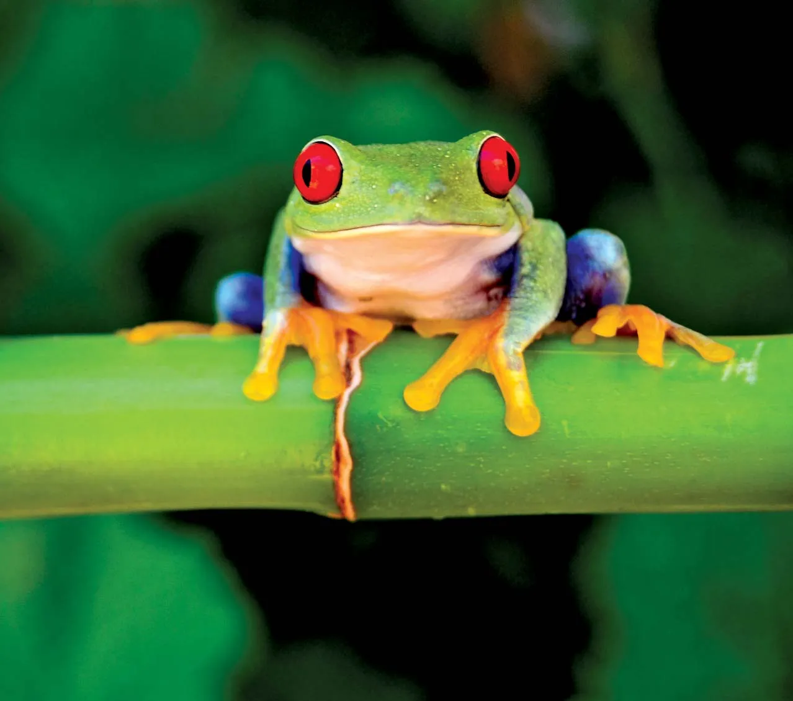
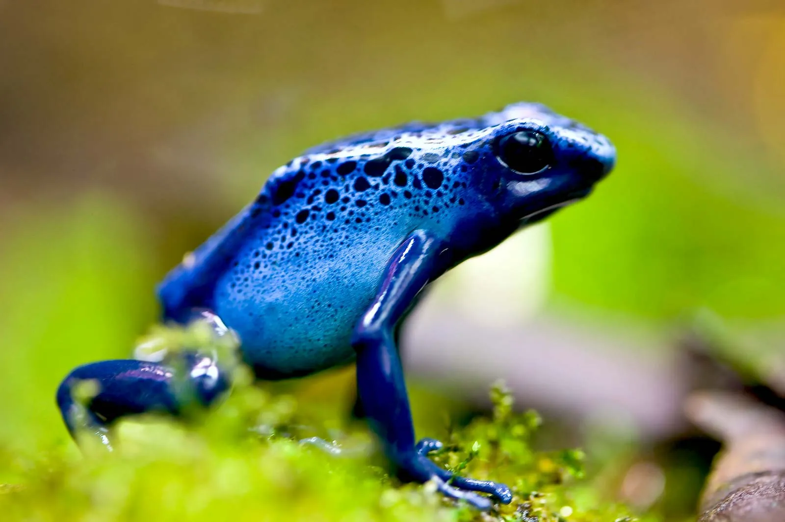

Types of Frogs
The following shows different types of frogs
Red-Eyed Tree Frog
Red eyed tree frog (also spelled treefrog, also called tree toad, any typically arboreal frog belonging to one of
several families of the order Anura)
red-eyed tree frog
The red-eyed tree frog (Agalychnis callidryas), a native of the tropical lowlands extending from southern Mexico to
northern South America, is a favorite for its remarkable adaptations. Its bulging red eyes are its telltale feature, but
it is also known for its neon-green body, accented with vertical blue and yellow stripes on the sides and bright orange
or reddish feet. It is thought that when startled, the red-eyed tree frog flashes its exaggerated coloration,
temporarily confusing its predators and thereby enabling its escape. The species has an impressive jumping ability, too,
which earned it the nickname “monkey frog.” Its huge webbed feet, which are equipped with sticky pads, provide a secure
grip as it leaps and climbs among the trees.


Blue Poison Dart Frog
Amphibian. Frog. Blue poison dart frog. Blue poison arrow frog. Dendrobates azureus. Poisonous frogs. Close-up of a blue
poison dart frog.
The blue poison dart frog (Dendrobates tinctorius "azureus") is unquestionably beautiful—like sapphire. And similar to a
precious gemstone, this species of frog is one of nature’s unique treasures, found only in the tropical forests that
border the Sipaliwini Savanna of southern Suriname and extend into northern Brazil. As its bright warning coloration and
common name suggest, the blue poison dart frog is poisonous, secreting a toxic substance through its skin. It is further
distinguished by its physique, having long arms and a hunched back. Every individual of the species has a distinct
pattern of black spots on its back and sides, a sort of fingerprint that can be used to tell them apart.
Amazon Milk Frog
Mission golden-eyed tree frog aka Amazon milk frog (Trachycephalus resinifictrix) native to the Amazon Rainforest in
South America. aka blue milk frog
Trachycephalus resinifictrix
With alternating bands and patches of dark brown and light gray to blue skin, the Amazon milk frog (Trachycephalus
resinifictrix) is a uniquely and beautifully colored species. The contrast between the colors is at its most vibrant in
young frogs. As they age, the colors fade slightly, and their skin becomes increasingly granular in texture. The
coloration helps the Amazon milk frog to blend into the trees in its habitat in the Amazon rainforest of northern South
America. Its toe pads are also specially adapted for an arboreal lifestyle. The species’ genus name refers to its
characteristically long snout, while the common name “milk frog” describes the milky white, poisonous secretions that
exude from its skin when the animal is stressed. The Amazon milk frog is also known as the mission golden-eyed tree frog
for the remarkable gold-and-black cross pattern in the iris of its eye.